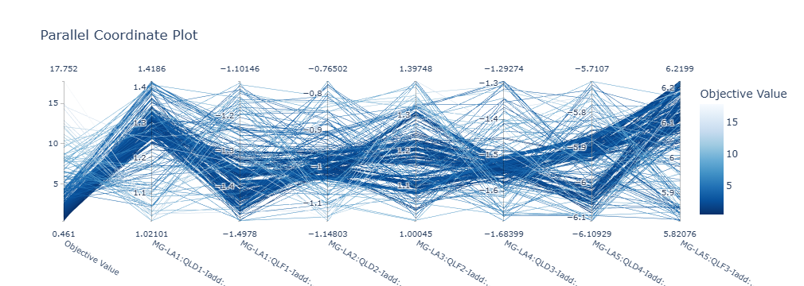

Визуализация на Python
NumPy сложил измерения в массив, SciPy подогнал модель и вернул параметры с погрешностями. Дальше нужен глаз. Две тысячи отсчётов, распечатанные в терминал, не скажут ничего, а те же отсчёты, нарисованные на экране, за секунду выдают и просевший фронт импульса, и наводку от сети, и точку, выпавшую из общего ряда.
Библиотек, написанных для рисования графиков, в Python много, но физику обычно хватает трёх. Matplotlib служит рабочей лошадкой и отдаёт статическую картинку, вставленную потом в статью. Plotly добавляет интерактив, ценный при разборе сырых данных: наведение с точными числами, зум, много измерений сразу на одном полотне. HoloViews идёт третьим путём и предлагает описывать данные вместо того, чтобы рисовать график.
Все данные, показанные ниже, посчитаны прямо в листингах, так что код главы запускается подряд, от первой строки до последней.
Matplotlib
У matplotlib два интерфейса, и первый из них, pyplot, унаследованный от MATLAB, держит скрытую «текущую фигуру», куда и дописывают команды вроде plt.plot. Второй отдаёт фигуру и оси явными объектами, названными в коде своими именами. Пиши сразу вторым: в нём видно, к каким осям относится каждый вызов, и код, растущий вместе с задачей, не ломается, когда фигур становится несколько.
Начнём с осциллограммы, записанной с цилиндра Фарадея, то есть с импульса тока пучка на фоне шума оцифровки.
import numpy as np
import matplotlib.pyplot as plt
rng = np.random.default_rng(42)
t = np.linspace(0, 10, 2000) # время, мкс
current = 4.2 * np.exp(-((t - 3.5) / 0.45) ** 2) # импульс тока пучка, мА
current += rng.normal(0, 0.10, t.size) # шум оцифровки
fig, ax = plt.subplots(figsize=(7, 3))
ax.plot(t, current, lw=0.8)
ax.set_xlabel('Время, мкс')
ax.set_ylabel('Ток пучка, мА')
ax.grid(alpha=0.3)
fig.tight_layout()
fig.savefig('waveform.png', dpi=300)
subplots возвращает пару, где фигура fig — это весь холст с полями и общим заголовком, а ax — прямоугольник с координатной сеткой, отведённый под сам график. Правило простое: рисуют в оси, сохраняют фигуру. Вызов tight_layout подбирает поля так, чтобы подписи, поставленные у осей, не срезались краем. savefig пишет файл, а plt.show() открывает окно, блокирующее скрипт до закрытия, и в программе нужно либо одно, либо другое.
Сырой сигнал редко показывают в одиночку: рядом кладут сглаженную кривую, а найденный максимум подписывают стрелкой.
from scipy.signal import savgol_filter
smooth = savgol_filter(current, 101, 3) # окно 101 отсчёт, полином 3-й степени
top = smooth.argmax()
fig, ax = plt.subplots(figsize=(7, 3))
ax.plot(t, current, lw=0.6, alpha=0.4, label='сырой сигнал')
ax.plot(t, smooth, lw=1.6, color='crimson', label='после Савицкого—Голея')
ax.annotate(f'{smooth[top]:.2f} мА при {t[top]:.2f} мкс',
xy=(t[top], smooth[top]), xytext=(t[top] + 1.0, smooth[top] - 0.5),
arrowprops={'arrowstyle': '->'})
ax.set_xlabel('Время, мкс')
ax.set_ylabel('Ток пучка, мА')
ax.legend(loc='upper right')
fig.tight_layout()
fig.savefig('waveform-smooth.png', dpi=300)
Две кривые, наложенные в одних осях, различают толщиной, прозрачностью и цветом, а метод legend собирает подписи, переданные параметром label. Метод annotate ставит надпись со стрелкой, протянутой от точки xytext к точке xy на самом графике.
Следующий сюжет — скан по параметру. Меняя силу квадрупольной линзы перед экраном, снимают размер пучка, а по параболе, восстановленной подгонкой, считают эмиттанс; сам метод разобран в главе про SciPy. Измерения, снабжённые погрешностями, рисует errorbar.
l = 1.2 # расстояние «линза — экран», м
eps, beta0, alpha0 = 0.12e-6, 6.94, -1.69 # эмиттанс, м·рад, и Твисс
gamma0 = (1 + alpha0 ** 2) / beta0
k = np.linspace(-1.5, 1.5, 25) # сила линзы, 1/м²
R11, R12 = 1 - k * l, l
sigma = np.sqrt(eps * (R11**2 * beta0 - 2*R11*R12*alpha0 + R12**2*gamma0))
meas = sigma + rng.normal(0, 20e-6, k.size) # измерение с ошибкой 20 мкм
fig, ax = plt.subplots(figsize=(6, 3.4))
ax.errorbar(k, meas * 1e3, yerr=0.02, fmt='o', ms=4, capsize=3, label='экран')
ax.plot(k, sigma * 1e3, color='crimson', label='модель')
ax.set_xlabel(r'Сила линзы $k$, м$^{-2}$')
ax.set_ylabel(r'Размер пучка $\sigma$, мм')
ax.legend()
fig.tight_layout()
fig.savefig('quadscan.png', dpi=300)
Подписи осей понимают подмножество TeX, заключённое в знаки доллара, поэтому индексы и греческие буквы пишутся привычно. Строку, отданную в подпись, помечай префиксом r, иначе обратный слеш будет съеден Python раньше matplotlib.
Двумерный массив показывает imshow, красящий каждую клетку по её значению; возьмём для него матрицу отклика замкнутой орбиты, посчитанную в главе про коррекцию.
n_bpm, n_cor, nu = 64, 48, 8.42
phi_b = np.sort(rng.uniform(0, 2 * np.pi * nu, n_bpm)) # фазы мониторов
phi_c = np.sort(rng.uniform(0, 2 * np.pi * nu, n_cor)) # фазы корректоров
beta_b = rng.uniform(4.0, 24.0, n_bpm) # бета-функция, м
beta_c = rng.uniform(4.0, 24.0, n_cor)
dphi = np.abs(phi_b[:, None] - phi_c[None, :])
R = (np.sqrt(beta_b[:, None] * beta_c[None, :]) / (2 * np.sin(np.pi * nu))
* np.cos(dphi - np.pi * nu))
print(R.shape)
lim = np.abs(R).max()
fig, ax = plt.subplots(figsize=(5.5, 4.5))
im = ax.imshow(R, cmap='RdBu_r', vmin=-lim, vmax=lim, aspect='auto')
fig.colorbar(im, ax=ax, label=r'$R_{ij}$, мм/мрад')
ax.set_xlabel('Номер корректора $j$')
ax.set_ylabel('Номер монитора $i$')
fig.tight_layout()
fig.savefig('response.png', dpi=300)
(64, 48)
Палитру выбирают по смыслу величины: матрице отклика, где знак меняется от элемента к элементу, идёт расходящаяся RdBu_r с белым нулём, и границы vmin и vmax, заданные вручную, обязаны стоять симметрично. Иначе белый цвет уедет с нуля и картинка соврёт. Для знакопостоянной величины бери viridis, не меняющий светлоту скачками и потому различимый даже в чёрно-белой печати. Радужный jet, который достался в наследство от старых пакетов, рисует ложные границы там, где данные меняются плавно.
Клетки у imshow равны между собой, а физическая сетка часто неравномерна, и для неё берут pcolormesh, принимающий сами координаты узлов. Физические границы картинки выставляют параметром extent, и номера пикселей на осях сменяются метрами.
Настройки, повторённые из графика в график, выносят в rcParams один раз на весь скрипт.
plt.rcParams.update({
'figure.figsize': (6.5, 3.6), # ширина колонки статьи
'font.size': 11,
'axes.grid': True,
'grid.alpha': 0.3,
'savefig.dpi': 300,
'savefig.bbox': 'tight',
})
fig, (up, down) = plt.subplots(2, 1, sharex=True, figsize=(6.5, 5))
up.plot(t, current, lw=0.6)
up.set_ylabel('Ток, мА')
down.plot(t, smooth, color='crimson')
down.set_ylabel('Сглажено, мА')
down.set_xlabel('Время, мкс')
fig.align_ylabels()
fig.savefig('report.pdf') # вектор, не рассыпающийся при печати
Параметр sharex=True связывает оси подграфиков, и подписи по времени печатаются только под нижним. В печать сохраняй вектор, .pdf или .svg, не размываемый при увеличении; растровый .png с плотностью 300 точек на дюйм оставь для слайдов и веба. Все картинки, собранные в одну статью, полезно строить одним скриптом, потому что правка стиля чинит тогда сразу весь набор.
Plotly
Статическая картинка, напечатанная в статье, хороша для читателя, а пока данные разбираешь ты сам, хочется другого: подвести курсор и прочитать точное число, выделить рамкой кусок и увеличить, погасить лишнюю кривую щелчком по легенде. Ровно это даёт Plotly, рисующий график в браузере поверх библиотеки plotly.js.
pip install plotly
Возьмём задачу потяжелее осциллограммы, то есть огибающую пучка, посчитанную вдоль тракта. Уравнение Капчинского—Владимирского, выведенное в отдельной главе, работает здесь поставщиком данных, а тракт собран из пяти соленоидов, расставленных через полметра.
import numpy as np
from scipy.integrate import solve_ivp
gamma = 1 + 2.0 / 0.511 # пучок 2 МэВ
beta = np.sqrt(1 - gamma ** -2)
perv = 2 * 100.0 / (17045 * (beta * gamma) ** 3) # первеанс при токе 100 А
eps = 1e-6 # эмиттанс, м·рад
z_lens = np.arange(0.5, 3.0, 0.5) # пять соленоидов через 0.5 м
z = np.linspace(0, 3, 400) # сетка вдоль тракта, м
def envelope(k):
"""Радиус пучка a(z), м, при жёсткостях соленоидов k."""
def rhs(s, y):
ks = (k * np.exp(-((s - z_lens) / 0.06) ** 2)).sum()
a, ap = y
return [ap, -ks * a + perv / a + eps ** 2 / a ** 3]
return solve_ivp(rhs, (0, 3), [5e-3, 0.0], t_eval=z, max_step=0.005).y[0]
a = envelope(np.full(5, 25.0)) * 1e3 # огибающая, мм
print(f'{a.min():.2f} {a.max():.2f}')
2.36 7.13
Первую картинку соберём вручную из объектов graph_objects, дающих полный контроль над каждой линией.
import plotly.graph_objects as go
fig = go.Figure()
fig.add_scatter(x=z, y=a, name='верх', line={'color': 'crimson'},
hovertemplate='z = %{x:.2f} м<br>a = %{y:.2f} мм<extra></extra>')
fig.add_scatter(x=z, y=-a, name='низ', line={'color': 'crimson'},
fill='tonexty', fillcolor='rgba(220,20,60,0.15)',
hoverinfo='skip')
for zi in z_lens:
fig.add_vline(x=zi, line_dash='dot', line_color='gray')
fig.update_layout(xaxis_title='z, м', yaxis_title='Радиус пучка, мм',
showlegend=False, height=350)
fig.write_html('envelope.html', include_plotlyjs='cdn')
Параметр hovertemplate задаёт содержимое всплывающей подсказки: %{x} и %{y} подставляют координаты точки, а <extra></extra> убирает служебную рамку с именем кривой. Метод write_html кладёт рядом самодостаточный файл, открываемый в любом браузере без Python. С ключом include_plotlyjs='cdn' он тянет plotly.js из сети, а со значением True зашивает библиотеку внутрь и разрастается до нескольких мегабайт.
Скан по параметру удобно показывать картой, поэтому прогоним расчёт для сорока одной жёсткости соленоидов и сложим полученные огибающие в один двумерный массив.
k_grid = np.linspace(15.0, 35.0, 41)
scan = np.array([envelope(np.full(5, k)) for k in k_grid]) * 1e3
heat = go.Figure(go.Heatmap(
x=z, y=k_grid, z=scan, colorscale='Viridis',
colorbar={'title': 'a, мм'},
hovertemplate='z = %{x:.2f} м<br>k = %{y:.1f} 1/м²'
'<br>a = %{z:.2f} мм<extra></extra>'))
heat.update_layout(xaxis_title='z, м',
yaxis_title='Жёсткость соленоидов k, 1/м²', height=380)
heat.write_html('scan.html', include_plotlyjs='cdn')
Наведя курсор на любую точку карты, ты сразу читаешь три числа: положение вдоль тракта, жёсткость линз и радиус пучка. В matplotlib за тем же пришлось бы лезть в массив по индексам. Картинка, сохранённая в HTML, остаётся живой и после закрытия Python: масштаб меняется колесом, а прямоугольник, выделенный мышью, растягивается на всё поле, и такими картами удобно искать рабочую точку установки.
Миллион точек plotly рисует уже медленно, потому что каждая линия, отданная в браузер, живёт отдельным объектом JavaScript. Для больших массивов есть Scattergl, у которого отрисовка переложена на видеокарту.
Когда осей нужно больше трёх, плоскость кончается. Тогда выручают параллельные координаты, где каждая переменная получает свою вертикальную ось, а один опыт превращается в ломаную, пересекающую все оси разом. Разыграем триста случайных настроек тракта и оценим каждую по среднеквадратичному отклонению радиуса от целевых четырёх миллиметров.
import pandas as pd
import plotly.express as px
rng = np.random.default_rng(1)
trials = rng.uniform(18.0, 32.0, size=(300, 5)) # 300 случайных настроек
loss = np.array([np.sqrt(np.mean((envelope(k) - 4e-3) ** 2)) * 1e3
for k in trials]) # отклонение от 4 мм, мм
runs = pd.DataFrame(trials, columns=[f'k{i}' for i in range(1, 6)])
runs['loss'] = loss
par = px.parallel_coordinates(runs, color='loss',
color_continuous_scale='Blues_r')
par.write_html('parallel.html', include_plotlyjs='cdn')
print(f'лучшая настройка: {loss.min():.2f} мм, худшая: {loss.max():.2f} мм')
лучшая настройка: 1.18 мм, худшая: 3.18 мм

Картинка выше нарисована тем же вызовом, только на настоящей задаче: тысяча прогонов оптимизации оптики линейного ускорителя инжектора ЦКП «СКИФ». Осей восемь, и крайняя левая несёт значение целевой функции, заключённое между 0.461 и 17.752, а остальные отданы добавкам к токам квадруполей, то есть каналам MG-LA1:QLD1-Iadd, MG-LA1:QLF1-Iadd, MG-LA2:QLD2-Iadd и так далее. Цветом закодирована та же целевая функция, и тёмные линии отмечают удачные прогоны.
Тысяча расчётов, выписанная таблицей, остаётся нечитаемой: это тысяча строк по восемь чисел. Параллельные координаты показывают другое. В том месте, где жгут линий сливается в узкую и почти неразличимую полосу, параметр решает дело, и в эту полосу обязательно попасть. Там, где линии размазаны по оси ровно, параметр на результат почти не влияет, и его отдают оптимизатору целиком. Хорошие сочетания видны сразу, потому что тёмные ломаные идут пучком, а не поодиночке. В браузере оси перетаскиваются мышью, а по каждой выделяется диапазон, и на экране остаются одни прогоны, которые прошли отбор.
HoloViews
Matplotlib рисует буквально то, что ему велено, и потому заставляет расписывать каждый шаг, от подписи оси до заданного вручную цвета. Иногда хочется обратного: описать, что за данные у тебя в руках, и дать библиотеке решить, как их показать.
HoloViews построен на принципе «аннотируй данные, а не рисуй график». Ты описываешь сами данные и их семантику, то есть что здесь аргумент, что значение и в каких они единицах, а библиотека уже сама выбирает представление. Один и тот же объект, собранный однажды, отрисовывается разными бэкендами: интерактивным bokeh, привычным matplotlib или plotly. Кода про пиксели становится меньше, а кода про изучаемую физику больше.
pip install holoviews bokeh
Базовым кирпичиком служит элемент — контейнер с данными, знающий свой тип визуализации. hv.Curve задаёт непрерывную зависимость, hv.Scatter показывает дискретные измерения, hv.Image отображает величину на регулярной сетке. Измерениям задают человеческие подписи и единицы, попадающие потом на оси и во всплывающие подсказки.
import numpy as np
import holoviews as hv
hv.extension('bokeh') # можно 'matplotlib' или 'plotly'
rng = np.random.default_rng(42)
t = np.linspace(0, 10, 2000)
current = 4.2 * np.exp(-((t - 3.5) / 0.45) ** 2) + rng.normal(0, 0.10, t.size)
dim_t = hv.Dimension('t', label='Время', unit='мкс')
dim_i = hv.Dimension('I', label='Ток пучка', unit='мА')
wave = hv.Curve((t, current), dim_t, dim_i)
wave
В Jupyter объект, возвращённый последней строкой ячейки, рисуется сам, так что аналог %matplotlib inline не нужен. С бэкендом bokeh панорамирование, зум и подсказки достаются бесплатно, и подозрительный выброс, замеченный на графике, разглядывается вблизи без перестроения картинки.
hv.Points внешне похож на Scatter, но семантика у него другая: обе координаты выступают независимыми измерениями, а точки просто живут на плоскости. Классическим примером служат частицы, разбросанные по фазовой плоскости. Готовые элементы комбинируются операторами, из которых + кладёт графики рядом, а * накладывает их в одних осях.
x = rng.normal(0, 1.0, 2000) # координата частиц, мм
xp = rng.normal(0, 0.3, 2000) # угол, мрад
phase = hv.Points((x, xp), ['x', "x'"])
grid = np.linspace(-3, 3, 200)
xx, yy = np.meshgrid(grid, grid)
spot = hv.Image(np.exp(-2 * (xx ** 2 + yy ** 2) / 1.2 ** 2), # пятно на экране
bounds=(-3, -3, 3, 3), kdims=['x', 'y'], vdims='I')
sparse = hv.Scatter((t[::200], current[::200]), dim_t, dim_i)
overlay = wave * sparse # в одних осях
layout = (wave + phase + spot).cols(3) # рядом, в три колонки
Совмещение работает потому, что каждый элемент самодостаточен: HoloViews видит, что измерения у wave и sparse совпали, и сам выравнивает оси, подписи и легенду. Число колонок в layout задаёт метод .cols(), вызываемый на готовой сборке.
Отдельная выгода начинается там, где графиков нужно семейство. В matplotlib скан по параметру превращается в цикл, склеивающий десяток подграфиков в одну фигуру, а HoloMap делает из того же параметра слайдер.
from scipy.integrate import solve_ivp
# модель тракта (z_lens, perv, eps, z) взята из раздела про Plotly
dim_z = hv.Dimension('z', label='Положение', unit='м')
dim_a = hv.Dimension('a', label='Радиус пучка', unit='мм')
def curve(k):
"""Огибающая пучка при жёсткости всех соленоидов k."""
def rhs(s, y):
ks = (k * np.exp(-((s - z_lens) / 0.06) ** 2)).sum()
a, ap = y
return [ap, -ks * a + perv / a + eps ** 2 / a ** 3]
a = solve_ivp(rhs, (0, 3), [5e-3, 0.0], t_eval=z, max_step=0.005).y[0]
return hv.Curve((z, a * 1e3), dim_z, dim_a)
hmap = hv.HoloMap({k: curve(k) for k in [20, 25, 30, 35]}, kdims='k')
hv.save(hmap, 'envelope-scan.html') # слайдер останется живым и без Python
dmap = hv.DynamicMap(curve, kdims='k').redim.range(k=(15.0, 35.0))
HoloMap считает все кадры заранее и держит их в памяти, зато сохраняется в самодостаточный HTML, который не стыдно отправить коллеге. DynamicMap вычисляет кадр по движению слайдера, что спасает, когда параметр непрерывный или каждый расчёт дорог. Плата за ленивость одна: без запущенного ядра Python объект не покажется, и в статичный файл он не ложится.
Оформление, никак не связанное с самими данными, отделено от семантики и навешено методом .opts() поверх готового объекта.
overlay.opts(
hv.opts.Curve(width=650, height=280, color='black'),
hv.opts.Scatter(size=7, color='crimson'),
)
# logz — логарифмическая шкала цвета, нужная пучкам и спектрам
# с большим динамическим диапазоном
spot.opts(width=380, height=340, cmap='inferno', colorbar=True, logz=True)
Часть опций зависит от бэкенда: ширина width и высота height заданы в пикселях у bokeh, а у matplotlib вместо них идут fig_inches и aspect. Полный список опций элемента покажет hv.help(hv.Curve).
Вокруг HoloViews выросла экосистема HoloViz. Пакет hvPlot после одного импорта добавляет к DataFrame аксессор .hvplot, заменяющий встроенный df.plot() из pandas; возвращает он обычные объекты HoloViews со всеми слайдерами и оверлеями. Библиотека Panel связывает графики, виджеты и текст в единый интерфейс, превращаемый командой panel serve app.py в веб-приложение. Мониторинг установки становится страницей в браузере, и ни одной строки JavaScript для этого не написано.
Полезные ссылки
- Галерея matplotlib, где картинку ищут глазами, а код берут готовым;
- Scientific Visualization: Python + Matplotlib Николя Руже, книга про графики, сделанные для научных статей;
- plotly.com/python, справочник по типам графиков с разобранными примерами;
- holoviews.org и holoviz.org, документация HoloViews и обзор всей экосистемы;
- Уравнение огибающей и коррекция орбиты, главы этой книги, откуда взяты данные для примеров.